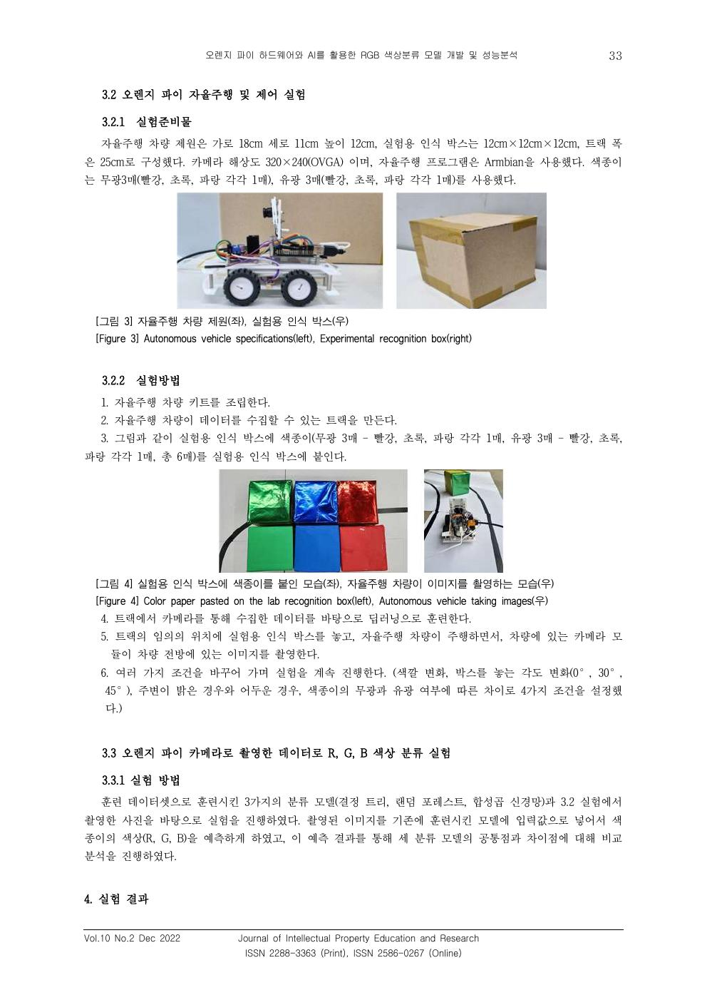

COMPUTER VISION, DATA QUALITY, MACHINE LEARNING
오렌지파이 기반 RGB 색상 분류 모델 개발
같은 분류 모델인데 실험할 때마다 결과가 달라지는 문제에서 모델보다 데이터 수집 조건을 먼저 의심했습니다. 실험 조건을 다시 정의하고 21,054장의 데이터를 구축한 뒤 Decision Tree, Random Forest, CNN의 성능과 입력 표현 차이를 비교했습니다.
- 기간
- 2022.09–2023.01
- 소속
- 중앙대학교 다빈치 창의학점제
- 역할
- 팀장, 데이터 수집 기준 정립, 데이터셋 구축, 모델 비교
- 성과
- 한국지식재산교육연구학회 논문지 게재, 공동저자 2/7

01 / PROBLEM
같은 모델인데 결과가 달라졌다
오렌지파이 카메라로 수집한 색상 데이터를 이용해 분류 모델을 만들었지만 실험할 때마다 결과가 달라졌습니다. 모델 설정만 바꾸는 것으로는 편차가 사라지지 않았고, 입력 데이터가 만들어지는 조건부터 확인했습니다.
모델 구조와 설정 변경
모델이 아니라 입력 데이터 조건 점검
02 / DATA DESIGN
실험 조건부터 고정했다
팀장으로 조건별 수집 기준을 정리하고 실험 절차를 문서화해 팀원이 같은 기준으로 데이터를 수집할 수 있도록 했습니다.

03 / DATASET
21,054장의 비교 가능한 데이터를 만들었다
원본 이미지를 분할한 뒤 실제 카메라 영상에서 주변 사물과 여백이 섞이는 조건을 고려해 중앙 영역을 크롭했습니다. 약 9:1 비율로 훈련 데이터와 시험 데이터를 구성했습니다.
04 / MODEL COMPARISON
세 모델을 같은 시험 데이터에서 비교했다
| 모델 | Accuracy | ROC-AUC |
|---|---|---|
| Decision Tree | 99.48% | 0.9961 |
| Random Forest | 98.10% | 0.9858 |
| CNN | 99.91% | 0.9993 |
CNN의 성능이 가장 높았지만, 단순 순위보다 모델에 어떤 입력 표현을 제공했는지가 더 중요한 차이였습니다.
05 / FINDING
두 모델이 같은 사진에서 함께 틀렸다
이미지의 공간 정보를 제거하고 세 채널 평균만 사용
이미지의 공간 정보를 유지
Decision Tree가 잘못 예측한 샘플을 Random Forest도 동일하게 잘못 예측하는 현상을 확인했습니다. 두 모델이 같은 채널 평균값 표현을 사용한다는 점에서 모델 종류만 바꾸는 것보다 필요한 정보를 입력이 보존하는지가 중요하다고 판단했습니다.
06 / LIMITATION
높은 정확도에도 남은 한계
세 모델 모두 색상 영역이 제대로 들어오지 않은 입력에서도 반드시 R, G, B 중 하나를 출력했습니다. 다시 구현한다면 판정 불가 클래스를 추가하고, 신뢰도가 낮은 입력에서는 결과를 보류하는 구조를 적용하겠습니다.
07 / LEADERSHIP
수집 기준을 팀의 공통 규칙으로 만들었다
서로 다른 전공의 학생 6명이 참여해 데이터 수집 기준을 동일하게 이해하는 것이 중요했습니다. 반복 실험의 편차가 데이터 조건에서 발생한다고 판단한 뒤 팀원들의 방식을 비교해 공통 기준을 정리하고 체크리스트로 문서화했습니다. 재수집에 따른 일정 지연은 주말 추가 촬영에 직접 참여해 보완했습니다.
08 / OUTPUT